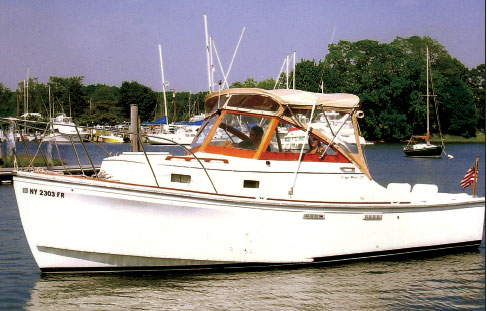

Cape Dory 28 Open Fisherman Open Fisherman
1985–1990
The Cape Dory 28 Open Fisherman is the open-helm, cockpit-focused version of the 28 powerboat family. It retains the same protected full-keel semi-displacement hull but trades the Cruiser’s enclosed salon and flybridge structure for a large working cockpit and open helm deck. A compact cabin forward still provides V-berths, galley functions and an enclosed head, making it usable for short cruising as well as fishing.

- Length
- 27.92 ft
- Beam
- 9.92 ft
- Draft
- 2.75 ft
- Hull behaviour
- Semi-Displacement
- Fuel
- Gasoline or Diesel
- Propulsion
- Shaft
- Engine configuration
- Single Inboard
- Boat family
- Downeast
- Construction
- Fiberglass; solid bottom with cored hull-side structures reported
Best for
- Fishing-focused owners who still want basic overnight accommodations
- Day boating and short coastal cruising
- Buyers prioritizing cockpit area over enclosed salon space
Trade-offs
- Less weather protection than the enclosed Cruiser variants
- Only compact V-berth accommodation for overnight use
- Open helm and cockpit increase exposure in cold or wet climates
- Single-engine propulsion lacks redundancy
Known concerns
- No model-specific concern has been promoted to B-Scout’s evidence threshold. This does not mean the model has no age-, condition- or hull-specific risks.
Inspection focus
- Confirm exact 28 configuration and model year from HIN and original documentation
- Moisture-test cabin sides, deck and cored hull-side areas around penetrations and previous repairs
- Inspect cabin windows, windshield frames and deck hardware for leakage history
- Inspect engine cooling, exhaust, mounts and tight service-access areas
- Inspect shaft, cutlass bearing, rudder, steering and full-keel running-gear protection
- Verify actual fuel, water, holding and air-draft figures because published specifications vary by year and configuration
Continue researching
Related boat models
27.92 ft · Semi-Displacement
27.92 ft · Semi-Displacement
30.25 ft · Planing / Modified-V
32.83 ft · Planing / Modified-V
28 ft · Semi-Displacement
26.9 ft · Semi-Displacement
About this record
B-Scout preserves uncertainty: missing information remains unknown rather than being treated as a negative. Specifications and guidance describe the model record; individual boats can differ by year, equipment, refit and condition.